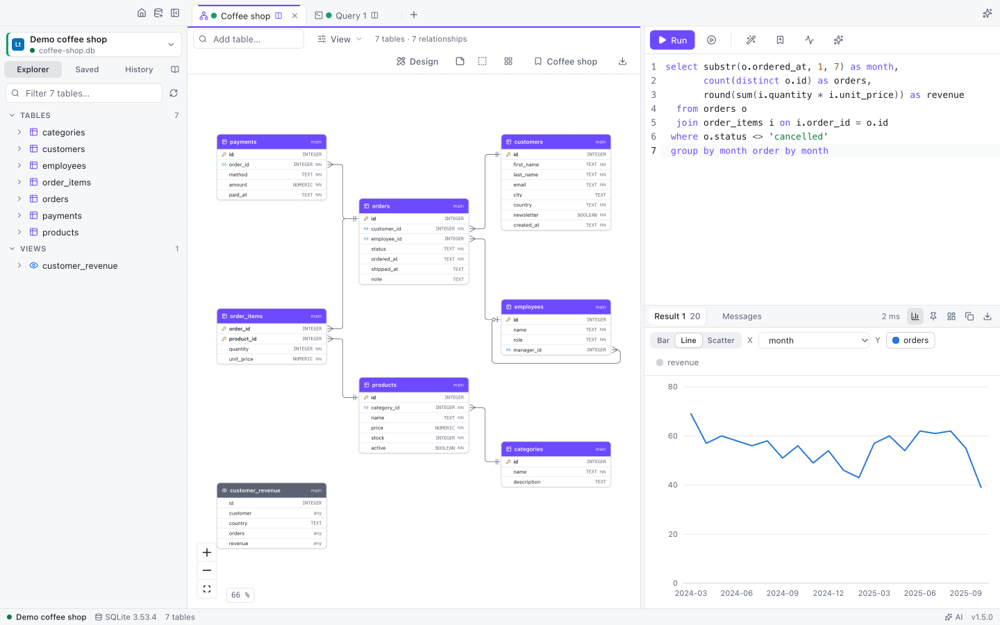
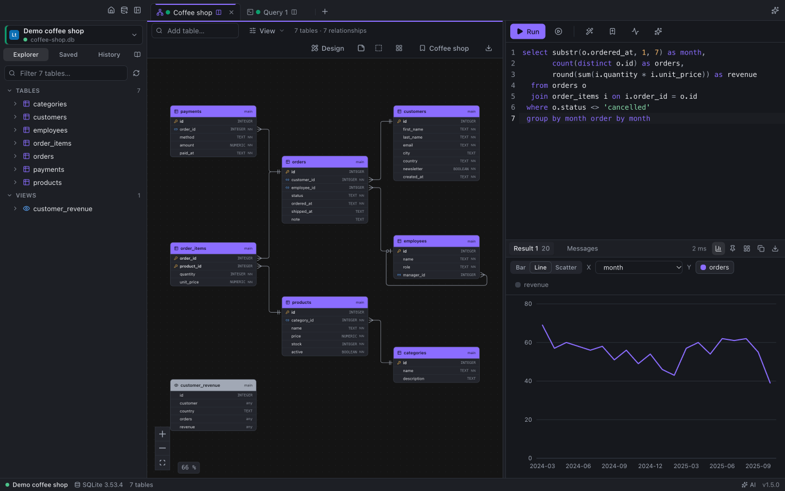
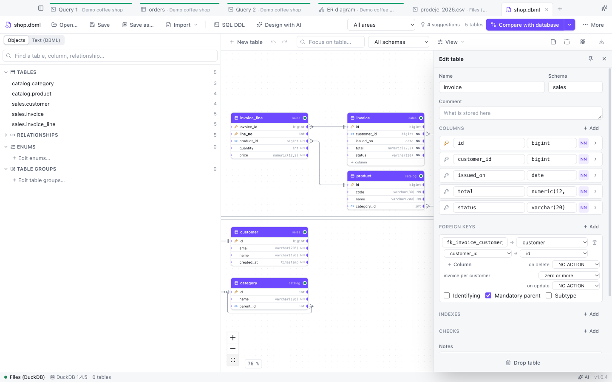
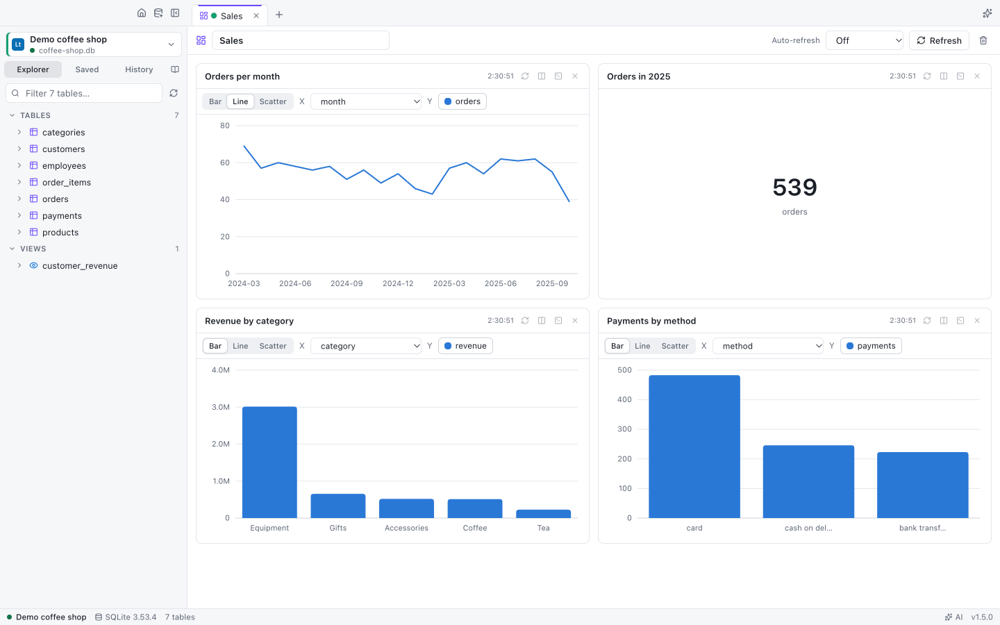
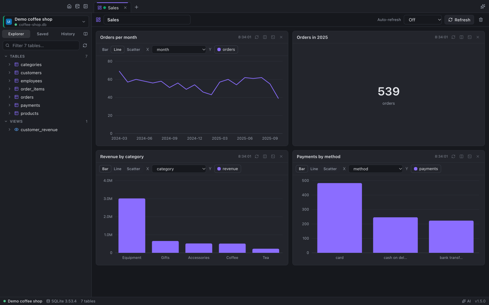
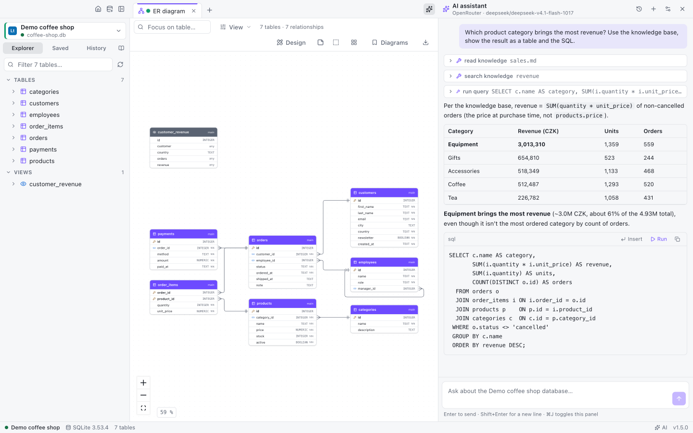

Understand your data.
DB Mastermind is a free, open-source database client and data modeler for Windows, macOS and Linux. Design the database, query it, see it in charts.


Where to start
| If you | Start with |
|---|---|
| build apps |
Drop your project’s |
| analyze data |
Open a table and filter it without writing SQL: nested AND/OR groups, last 30 days, in list. Drop a CSV, Excel or Parquet file on the window and query it with SQL, then chart the result. |
| work on a company Windows laptop |
Get it from the Microsoft Store, or run the portable zip with no installation and no admin rights. SQL Server with Windows authentication, read-only and production connections, and AI that IT can switch off. |
| design databases |
Open a DeZign for Databases project, a MySQL Workbench model or a drawDB file, or start a model from scratch. Compare it with the live database to get the migration, checked against the data first. |
Design it
Draw a new database or change the one you have. Every change becomes a migration script you review, checked against the data that is already there.


-
A model you can keep in Git
Draw tables and relationships, and rename and retype them right on the canvas; everything else is in one panel. The model is a DBML text file. Generate DDL for any of the eleven databases, or compare the model with one to get the migration.
-
Migrations that check the data first
NULLs, duplicates and orphans are found before anything runs. Steps that can’t be undone, like dropping a table, are called out, and the rest comes with a rollback script.
-
Diagrams of a live database
Automatic layout, crow’s-foot notation, focus on a table and its neighbors, saved subject areas, and the join path between any two tables as ready SQL.
-
Start from what you have
A database, an SQL script, a Prisma schema, a Mermaid ER diagram, a drawDB file or a MySQL Workbench model. The file you open stays as it is.
-
Code from a model
A Prisma schema, a Drizzle schema, SQLAlchemy models or TypeScript types, from a model or a live database. Each is checked by the tool it is for: Prisma, the TypeScript compiler, SQLAlchemy.
-
Using DeZign for Databases?
Your projects open here and save back in place, without DeZign installed. What is kept
Also here: schema compare between environments with the migration for the target, data compare with a sync script, IDEF1X notation, and diagrams as PDF, PNG, SVG, Mermaid or PlantUML. Diagrams and models in the guide
Query it
Browse, filter and edit data, or write SQL in an editor that knows your schema.
PostgreSQL, SQL Server, Oracle, MySQL, MariaDB, SQLite, DuckDB, ClickHouse, CockroachDB, BigQuery and Trino, tested in CI against running servers (BigQuery against its emulator), and CSV, Parquet and Excel files. Hosted databases too: Supabase, Neon, Timescale, Amazon RDS and Aurora, Azure Database and Azure SQL, Google Cloud SQL. Paste their connection string and the app recognizes the service.


-
Filters without SQL
Nested AND/OR groups, more than 25 operators (in list, between, regex, last N days, this month), a raw WHERE, or a filter described in plain words. Click a foreign key to open the row it points to.
-
An editor that knows your schema
Autocomplete writes whole JOINs from foreign keys and warns while you type about a table that doesn’t exist or an UPDATE without WHERE. Parameters, snippets, execution plans, history and saved queries are built in.
-
Files are tables too
Drop a CSV, Parquet, JSON or Excel file on the window and query it with SQL. Exports with semicolons and decimal commas work as they are.
-
Edit with a safety net
Edit cells, paste rows from Excel and add new ones: every change waits in a change set you review. In the editor you commit yourself, and an open transaction is always shown.
-
Safe by default
Read-only connections, a production guard, and a question before DELETE or UPDATE without WHERE, DROP or TRUNCATE.
-
Connections from where they already are
SSH tunnels and jump hosts, TLS, passwords from 1Password, Bitwarden or Vault, SQL Server with Windows authentication or Entra ID. Import connections from DBeaver, DataGrip, pgAdmin, SSMS, Azure Data Studio, TablePlus and more. Coming from Azure Data Studio
Also here: server activity and lock waits, the slowest queries, unused and duplicate indexes, users and roles, backup and restore, copying tables to another database, a command palette (Ctrl/⌘ K), split view, and an explorer that stays fast with thousands of tables. Writing SQL in the guide
See it
Turn a result into a chart in one click, and keep the ones you check often on a dashboard.


-
Charts from any result
Bar, line or scatter, from the result you already have. Pin a chart or a single number to a dashboard that refreshes itself.
-
Find any value
Search a whole database for a value, see a column’s profile (empty, distinct, most common), and get totals of the cells you select.
-
Export without limits
Every row of a table or a query to CSV, Excel, JSON or SQL, beyond any display limit.
-
A data dictionary to share
One HTML page documenting every table, with your notes, for people who don’t use the app.
Also here: results copied as TSV for Excel, JSON or Markdown, several result sets saved at once, and charts exported with the query that made them. Results in the guide
AI on your terms
Bring the AI you already have: a Claude Code or Codex subscription, your own API key, or a model running on your computer. It is off until you set one up.
Claude Code, Codex, Anthropic, OpenAI, OpenRouter, Gemini, Azure OpenAI, Ollama, and any OpenAI-compatible server such as LM Studio or vLLM.


-
Ask, explain, fix
The assistant explores the schema, samples data, runs read-only queries and asks before any change. Press Ctrl/⌘ I in the editor to describe a query; a failed statement gets a Fix with AI button.
-
Read-only means read-only
Queries from AI and agents run in a read-only transaction that is rolled back, so the database itself refuses a write. It doesn’t depend on guessing from the SQL.
-
A knowledge base
Markdown notes per database explain what tables, codes and statuses mean. Keep them in Git, share them with your team, and let AI draft the first version.
-
Design with AI
Describe a change in plain words; the assistant proposes it as pending design changes with a migration you review.
-
You decide
Per connection: AI off, schema only, read or write. IT can turn AI off for everyone.
Also here: filters described in plain words, Explain with AI on any table, and team tools: SQL files in the knowledge base that the assistant and agents can call, read-only and with bound parameters. AI and agents in the guide
Your databases in your coding agent
DB Mastermind is also an MCP server. Claude Code, Codex, Cursor and other agents get schema exploration, read-only queries, join paths and your knowledge base, through the connections you already have and only those where you allow AI.
Easiest: in the app, open Settings → MCP server and choose Add to Claude Code / Claude Desktop / Codex / Cursor / VS Code. It writes their configuration for you and keeps a .bak copy. The same page shows the exact command for your computer. By hand:
Run in a terminal:
claude mcp add --scope user dbmastermind -- "/Applications/DB Mastermind.app/Contents/MacOS/DB Mastermind" --mcp
Check it with claude mcp list or /mcp inside Claude Code.
Tools for agents: list_connections, list_tables, describe_table, search_schema, get_relationships, find_join_path, sample_rows, run_query, explain_query, get_definition, search_knowledge, read_knowledge, write_knowledge (when you allow it), and prompts such as document_database. An agent can also propose a new connection, which you review and save in the app.
Private by design
Your databases, queries and passwords stay on your computer. No account, no tracking, nothing sent anywhere you didn’t choose.
- No telemetry
- No analytics, no crash reports, no usage statistics, no sign-in.
- Secrets stay local
- Passwords and API keys are encrypted with your system keychain (on Linux without one, the app warns you) and go only to the database or AI provider they belong to.
- AI only when you choose
- Off until you set up a provider. Every change asks first, agents are read-only unless you allow writes, and AI can be switched off per connection or for the whole company. Ollama on your computer keeps it all there.
- Updates, nothing else
- The only network access of its own is the update check with GitHub (and the download, where the app updates itself). Turn it off in Settings → General.
Install
Free for everyone, with no feature limits. The installer, the AppImage and the macOS app update themselves; the Store updates its copy; the portable zip and the .deb tell you when a new version is out.
Windows
Microsoft Store: signed by Microsoft, no warnings, updates through the Store. Get it from the Microsoft Store. AI agents reach this version over HTTP (see MCP above).
No installation: download the portable zip, unzip it and run DB Mastermind.exe. Settings stay in the folder.
Installer: …-setup.exe, per user, no admin rights, updates itself. For IT: the per-machine .msi.
Files from GitHub aren’t code-signed yet: if SmartScreen warns, choose More info, then Run anyway.
Scoop:
scoop install https://github.com/eLh0m3r0/db-mastermind/releases/latest/download/db-mastermind.json
macOS
Download the .dmg for Apple Silicon or Intel and drag the app to Applications. The app isn’t notarized yet, so macOS blocks it the first time: open System Settings → Privacy & Security and click Open Anyway, or run
xattr -dr com.apple.quarantine "/Applications/DB Mastermind.app"
Homebrew:
brew tap elh0m3r0/db-mastermind https://github.com/eLh0m3r0/db-mastermind brew install --cask db-mastermind
Linux
Debian / Ubuntu: the .deb package. It runs inside Chromium’s sandbox.
AppImage: DB-Mastermind-linux-x86_64.AppImage. Make it executable and run it; it updates itself. It uses the sandbox where the system allows unprivileged user namespaces, and says so when it starts where it doesn’t (Ubuntu 23.10 and later by default). It needs FUSE 2: on Ubuntu 24.04, sudo apt install libfuse2t64.
Make it yours
Light, dark or high contrast, six accent colors and compact density, in Settings → Appearance. The colors work here too.
The app has a few of these. Settings → Appearance.
Who makes it
DB Mastermind is free because it exists to help people and teams understand their data, with one tool for the whole job: design the database, query it, and see it in charts. It is made by Václav Mudra, who decides what it does and uses it every day. The code, tests and releases are written by an AI maintainer, Claude, working for him. It is free and MIT-licensed, with no paid tier, no account and no telemetry: its author pays for it, and Ko-fi is there if you want to say thanks. It is young, a 1.x release, and feedback is welcome in the issues.